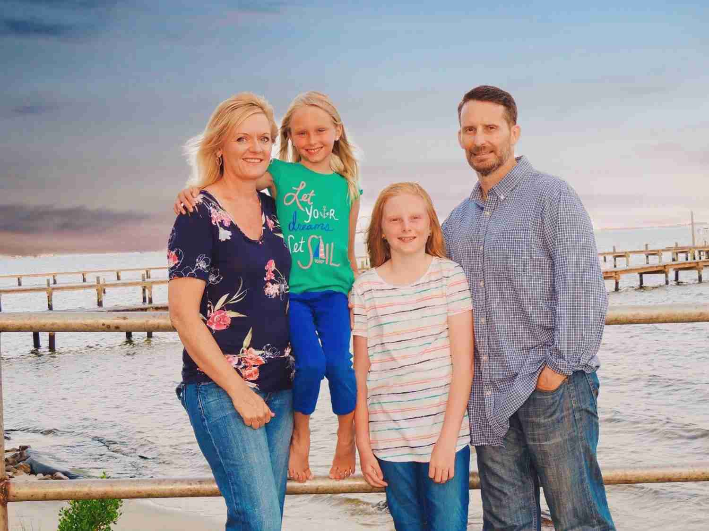

Quick History
My wife Monica and I live in Battlefield, Missouri with our two daughters, Makenna and Madeline. Both Monica and I grew up in Springfield, graduating from Kickapoo High School in 1990 and 1991, respectively.
I retired from the Army in November of 2018 following 23 years of active service. In those years, we (the family) lived in multiple US states, and I (with the Army) visited lots of cool places, and completed overseas tours in Iraq, Afghanistan, and South Korea. The last job I held in the Army was the commander of the 2nd Squadron, 11th Armored Cavalry Regiment out of Fort Irwin, California. Click here to learn a little about the 2nd Squadron and the "Blackhorse Regiment".
I'm currently pursuing OTC's Certificate of Achievement in Computer Programming, and I'm doing so for a few reasons. One, I like computers. I'm not a computer prodigy by any stretch of the imagination, but I enjoy using them. Two, I like problem solving. Three, finally, I want to learn some new skills to start my next career.